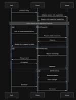
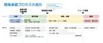

フォトシンス エンジニアブログ
https://akerun.hateblo.jp/
株式会社Photosynth のテックブログです
フィード
コードレビューの本質: 可読性のさきにあるもの
フォトシンス エンジニアブログ
この記事は Akerun Advent Calendar 2024 - Qiita の10日目の記事です。 こんにちは。@ps-tsh です。バックエンドシステムの開発を担当しています。最近はエンジニアのマネジメントやプロダクトの仕様策定にも携わっており、自分でコードを書くよりもレビューの時間が多くなってきました。本当は一人で全部書きたいのですが、仕事を進める上でそういう我儘はいったん傍に置くことになります。というわけで、今回はコードレビューの話をしてみようと思います。 コードレビューは、ソフトウェア開発の現場で欠かせないプロセスの一つです。品質向上はもちろん、チーム全体の理解を深める絶好の機…
15時間前
30分で shibboleth サーバを立てて GakuNin 連携の準備をする
フォトシンス エンジニアブログ
この記事は Akerun - Qiita Advent Calendar 2024 - Qiita の 8 日目の記事です。 どうも daikw - Qiita です。 最近、学術認証フェデレーション（学認, GakuNin）を調べる機会があり、 Shibboleth を前提とした記述が多かったので、試しに Shibboleth サーバを建ててテストフェデレーション申請まで一通りやってみました。 以下の記事・仕様を参考にしました。 学認技術運用基準 | 学術認証フェデレーション 学認 GakuNin 学認申請システム利用マニュアル(テストfed)_3 SPセッティング - GakuNinShi…
1日前
Akerunというプロダクトに興奮した話
フォトシンス エンジニアブログ
Phtosynth入社３ヶ月目、27年目の新入社員です。 52年人間やっていますと、色々あります。色々考えます。 27年テレビ作り続けていると、社会情勢も変わりますし、合わせてユーザー層も、構成人数も変わります。自分自身の生活ステージも、ただ仕事に全力を傾けられた時期から、家庭を持ち、家事育児とのバランスを考えた働き方に変わってきました。 そして介護が目の前に 介護の大変さ 前職はテレビを作る人だったので、その立場から介護に携われないかと考え、市場調査を行いました。 介護をする方の中でも「介護老人福祉施設」勤務の方、ケアマネージャーさん、介護職員さん、看護師さんに聞き取りを行いました。 その中…
1日前
連打されると困るんです
フォトシンス エンジニアブログ
Phtosynth入社３ヶ月目、ピチピチの新人です。 前職は家電屋で27年テレビ作ってました。 モノを作る上で、割とメジャーな不具合に「ユーザーの連続操作」を起因とするものがあります。 今回は「ボタン連打」って何故発生して、何が起こるのか？どう対策すべきか？について語ります。 その指、止められますか？ 連打したことありますよね？ エレベータが来ない、チケットが発券されない、推しのチケット発売１秒前。連打しちゃいますよね？でも、その裏ではシステムが悲鳴をあげています… あ、ゲームの連打は別ですよ？16連打とか、張り手とか、キックとか、ビリビリとか。積極的に連打してください。 人はなぜボタンを攻め…
4日前
運用分析の心得 1
1
フォトシンス エンジニアブログ
この記事は Akerun - Qiita Advent Calendar 2024 - Qiita の 6 日目の記事です。 こんにちは、 msuz - Qiita です。フォトシンスに入って 2 年目になりました。 2024年はソフトウェア開発チームのマネージャーとしてAkerun入退室管理システムのサーバインフラ運用、組み込みファームウェアの開発と市場配布、ウェブサービスやモバイルアプリの開発支援活動などに携わってきました。 さて今回は「運用分析」のお話です。 サービスを運営する上でDBやログのデータを解析する活動を、社内では「運用分析」と呼んでいます。 この運用分析に関する「心得」を文書…
4日前

MCP のリリースと仕様をよく読む
フォトシンス エンジニアブログ
この記事は Akerun - Qiita Advent Calendar 2024 - Qiita の 5 日目の記事です。 どうも daikw - Qiita です。 先週 Anthropic が発表し、話題になっている MCP のリリースと仕様をよく読みました。 MCP は大体 GATT (BLE通信における Service と Characteristic のようなもの) だと理解しました。 サンプルもいくつか試して、実装しやすそうでした。何か作ってみたいですね。 Introducing the Model Context Protocol Introducing the Model C…
6日前
生産性向上活動：価値を生み出すプロセスへの取り組み
フォトシンス エンジニアブログ
この記事は Akerun Advent Calendar 2024 - Qiita の4日目の記事です。 はじめまして。SW開発部の @yooda です。Photosynthに入社して2年半ほどになります。 Miwa Akerun Technologiesが運営する賃貸住宅管理システムの開発チームでエンジニアリングマネージャをやっています。 はじめに 開発の進め方 重要度の定義 取り組みの結果 最後に はじめに ソフトウェア開発プロジェクトにおいて、Q（品質）、C（コスト）、D（納期）の３つの要素が重要と言われています。 ソフトウェア開発の生産性を考える際、バグが少ない高品質なソフトウェアを、…
7日前

開発プロジェクトを“回す”ための計画とルール作り 78
フォトシンス エンジニアブログ
この記事は Akerun - Qiita Advent Calendar 2024 - Qiita の 3 日目の記事です。 こんにちは、 AkiAbe - Qiita です。ご無沙汰しています。 フォトシンスに入って 5 年目となりました。そして VPoE ロールをやらせてもらって 2 年が経とうとしています。 時間の経つのは早いですね。 この 2 年で開発に関するプロセスやフォーマットなどをルール化し、運用を立て付けてきました。 2 年やってようやく板についてきて、ある程度サイクルが回る状態ができました。 フォトシンスとしてどのような開発フローや開発プロジェクトの管理をしているかをご紹介で…
8日前

モバイルチームが新技術を社内で試す場
フォトシンス エンジニアブログ
この記事はAkerun - Qiita Advent Calendar 2024 - Qiitaの２日目の記事です。 1行で 同じことをやり続けて飽きる人はたまには味変の場を作りましょう。 こんにちは。ohioshirt - Qiitaです。 最近はFlutterでモバイルアプリ開発をしています。 今年はいくつかのイベントに参加しました。どれも初参加でしたが、楽しかったです。 Kotlin Fest www.kotlinfest.dev Droid Kaigi 2024.droidkaigi.jp - Flutter Kaigi 2024.flutterkaigi.jp iOSDCはタイミング…
8日前
aws-google-auth を Go でリライトした
フォトシンス エンジニアブログ
この記事は Akerun - Qiita Advent Calendar 2024 - Qiita の 1 日目の記事です。 どうも、 daikw - Qiita です。ご無沙汰しています。 今年の4月から、フォトシンスの CTO になりました。機械とお話しする時間が減り、人間とお話しする時間が増えました。 概要 今年、aws-google-auth を Go でリライトしました。 Google SSO でログインしながら、 AWS CLI 用の認証情報を取得するツールです。 Photosynth-inc/aws-google-login: Provides AWS STS credentia…
10日前
AWS未経験のファームウェアエンジニアが5ヶ月かけてAWS DVAを取得した話
フォトシンス エンジニアブログ
N番煎じも甚だしいタイトルですが、AWS未経験の方やこれから勉強して資格を取ろうと思ってる方に、AWS DAVの学習方法と良かった点、改善点を共有します
6ヶ月前
Akerunバックエンドシステムの技術的負債に対する取り組み[後編]
フォトシンス エンジニアブログ
この記事は Akerun Advent Calendar 2023 - Qiita の24日目の記事です。 こんにちは。@ps-tsh です。API Server などバックエンドシステムの開発を担当しています。前回に続き、当社(Photosynth)での技術的負債に対する取り組みについて紹介します。 前編はこちら: akerun.hateblo.jp 2021年にスタートした技術的負債解消プロジェクトでは、メインの目的を「システムの安定稼働」と定め、安定稼働を実現するための取り組みとして「収集メトリクスの改善」「単一障害点の解消」「ソフトウェア脆弱性の解消」「運用作業の品質改善」の4方針でそ…
1年前
Akerunバックエンドシステムの技術的負債に対する取り組み[前編]
フォトシンス エンジニアブログ
この記事は Akerun Advent Calendar 2023 - Qiita の23日目の記事です。 こんにちは。@ps-tsh です。API Server などバックエンドシステムの開発を担当しています。最近は一つのトレンドとして技術的負債との付き合い方をテーマとしたIT勉強会の数が増えてきた印象がありますね。今回は、当社(Photosynth)での技術的負債に対する取り組みとして、プロジェクトを推進するうえでポイントになったところをいくつか紹介したいと思います。後編は12/24公開です。 評価と優先順位づけ まず、最も大切なポイントはいきなり作業に着手せず、技術的負債の評価と優先順位…
1年前
[SwiftUI]テスタブルな画面遷移の実装手順
フォトシンス エンジニアブログ
こんにちは、 takeshi-p0601 - Qiita です。普段iOSアプリケーションの開発をメインに業務を行っています。AdventCalender今年2回目の参加です。 本記事ではiOSアプリに関する実装の小技を紹介します。具体的にはSwiftUIでアプリを実装するにあたって、最近試している画面遷移の実装をする際のちょっとした工夫です。内容的にiOS/iPadOSのアプリケーションを開発される方向けの記事になります。 画面遷移の実装 実装方法 効果 [応用]アラートを表示する実装 画面遷移の実装 あるA画面から、B画面に遷移するような要件を実装する場合、SwiftUIを使用してどのよう…
1年前
リファクタリングの効果を可視化したい
フォトシンス エンジニアブログ
この記事は Akerun Advent Calendar 2023 - Qiita の19日目の記事です。 はじめまして。SW開発部の @yooda です。Photosynthに入社して1年半ほどになります。 BtoC 向けのサービス開発として MIWA Akerun Technologies と一緒に開発をやっています。 はじめに リファクタリングの効果 現状の品質を分析 さいごに はじめに ソフトウェア開発のエンジニアをやっていると、自分たちが開発し、保守しているシステムのプログラムのリファクタリングをする機会が度々発生します。 リファクタリングとは、外部から見た時の挙動は変えずに、プログ…
1年前
15億件以上入ったテーブルのスキーマをサービス無停止で変更した
フォトシンス エンジニアブログ
15億以上のデータが入ったMySQLテーブルのスキーマ変更をサービス無停止で実施しました。 今回はこの対応を実施した私が、そもそもなぜサービス無停止でのスキーマ変更が必要だったのか、どのようにサービスを止めずにスキーマ変更したのか、実際に使用したときに工夫したポイントについて共有します。
1年前
Akerunコントローラーからwebhookする
フォトシンス エンジニアブログ
Akerunコントローラーからwebhookの通信ができるように改造し、slack workflowと連携させます
1年前
Androidアプリ開発でREST APIのモックサーバーを用意する方法
フォトシンス エンジニアブログ
こんにちは、ohioshirt - Qiita です。 今回は、業務効率化ツールの話です。 モバイルアプリの開発中に 色々なレスポンスを返して欲しくなることがあります。 例えば、課金ユーザーとそうでないユーザーで レスポンスの形式を変えたいとか、 所属しているグループの状態によってレスポンスの形式を変えたいとか。 もちろん、サーバー/DB側で それぞれの状況に応じたアカウントを作っておくのが一番ですが、 それなりに手間がかかるので、 ダミーのAPIサーバーからレスポンスを返すようにして 済ませることがあります。 これまで扱ってきた方法の変遷を振り返ってみます。 いずれも新しいものではないので紹…
1年前
開発遅延を防ぐ！事前検証によるプロジェクト管理術
フォトシンス エンジニアブログ
プロジェクトの初期段階での検証は、将来的な問題を未然に防ぐために重要です。この記事では初期段階での検証がなぜ重要か、どうやって実施するかを私が経験した事例を交えながら紹介します。
1年前
レガシー製品のリファクタリング戦略
フォトシンス エンジニアブログ
この記事は Akerunのカレンダー | Advent Calendar 2023 - Qiita 6日目の記事です。 ishturk - Qiita です。 この記事ではエンジニアが大好きなリファクタリングについて綴ります。 リファクタリングの理由 ソフトウェアには必ず不具合が潜んでいます。ハードウェアを制御しているソフトウェアだと、タイミングや外的要因（温度や経年劣化など）で発生率が大きく変わったりします。 これまでも、お客様に迷惑をかけないために、検知した不具合をスピーディに修正するサイクルを回してきました。 その一方で、修正を繰り返した結果、当初の設計が歪み、あらたな不具合を埋め込んで…
1年前
組み込みエンジニアのインフラ/SREへの挑戦
フォトシンス エンジニアブログ
組み込みエンジニアのインフラ/SREへの挑戦 はじめに みなさま、初めまして。昨年11月にphotosynthに中途で入社したny-yoです。よろしくお願いします。 今回は組み込みエンジニア出身の私が、インフラ/SRE領域に挑戦した1年を振り返りたいと思います。 なぜインフラ/SREに挑戦しようと思ったのか なぜ組み込み出身の私が異なる領域に挑戦しようと思ったのか、私自身の思い、きっかけに絡めて紹介します。 私は新卒で某複合機メーカーに入社してから、組み込みLinux、デバイスドライバなどいわゆる低レイヤーソフトウェア開発に携わっていました。 これからの時代はデバイスとWebのシームレスな連携…
1年前
開発組織の負債と戦い続ける
フォトシンス エンジニアブログ
この記事は Akerunのカレンダー | Advent Calendar 2023 - Qiita の 11 日目です。 このイベントに参加して 4 年目となりました AkiAbe - Qiita です。 昨年は FW 開発領域のマネージャーとしての活動をしていましたが 、今年はソフトウェア領域全体のマネージャーとして活動をさせていただきました。 photosynth.co.jp 現職に拝命して、まず開発組織の立て直しに注力しました。 その過程で SaaS 事業を運営する会社の宿命として「組織/技術負債と戦い続ける覚悟」が必要だなと感じました。 組織的負債ってなんなん？ ChatGPT さんに…
1年前
Cobraを使ったCLI開発の新しい定番 ~ベストプラクティスと実践ガイド~
フォトシンス エンジニアブログ
この記事は Akerunのカレンダー | Advent Calendar 2023 - Qiita 15日目の記事です。 こんにちは、住宅開発チームの島田です。 はじめに パッケージを利用しないパターン CLIパッケージの選定 Cobraを利用したパターン1 Cobraを利用したパターン2 はじめに 今回は、Go言語でCLI(Command Line Interface)を実装した際の課題とそれに対するアプローチを紹介したいと思います。 CLIで実現したい事は、以下の内容になります。 管理者ユーザをDBに登録する CLIのパラメーターで登録するメールアドレスを受ける 登録ができたら、登録したメ…
1年前
Google Play Consoleの署名エラーでリリースが遅れた
フォトシンス エンジニアブログ
この記事は Akerunのカレンダー | Advent Calendar 2023 - Qiita - 9日目の記事です。 こんにちは、ohioshirt - Qiita です。 普段はAndroidアプリの開発をしています。個人ではiOSアプリも開発します。 今回はAndroidアプリリリース作業の中で起きたトラブルについて書きます。 はじめに この記事にはアプリへの署名の話が出てきます。 記事そのものを読むための前提知識は不要だと思いますが、 知識を得たい場合は公式ドキュメントを当たってください。 https://developer.android.com/studio/publish/a…
1年前
SCRUM BOOT CAMP THE BOOK を読んでスクラム開発を理解する
フォトシンス エンジニアブログ
はじめに この記事は Akerunのカレンダー | Advent Calendar 2023 - Qiita 8日目の記事です。 こんにちは、開発部住宅開発チームの ps-yu1129 - Qiita です。普段は Web アプリケーションのバックエンド開発をメインで担当しています。 はじめてスクラムをやることになったら読む本(と書かれていた)、SCRUM BOOT CAMP THE BOOK【増補改訂版】 スクラムチームではじめるアジャイル開発 電子書籍｜翔泳社の本 を読んだので、本の内容と私のチームでのスクラム開発事情をご紹介します。 なぜ読もうと思ったか 私のチームでは開発プロセスとして…
1年前
新卒エンジニアの挑戦：電気錠シミュレータ開発の全記録
フォトシンス エンジニアブログ
初めに こちらは、Akerun Advent Calendar 2023 7日目の記事です。 皆さんこんにちは。この度新卒でFWエンジニアとして入社したwipaltoです。 記事を書くことが初めてなので、緊張しております。 いきなりですが、新卒研修としてフォトシンスに入社してからさまざまな研修を行ってきました。そこで、現在行なっている研修が電気錠シミュレータ開発なるものです！ 電気錠シミュレータ開発とは 企画・要件定義・設計・実装・効果検証までをドライブし、開発プロセスを理解する目的で行われました。 私の所属するFWチームは、Akerunコントローラー（Akerun Ctl）の開発において実物…
1年前
ドキュメンテーションジャーニー 〜 シフトレフト・Wモデルにちょっとでも近づける
フォトシンス エンジニアブログ
この記事は Akerunのカレンダー | Advent Calendar 2023 - Qiita 4日目の記事です。 ishturk - Qiita です。フォトシンスに入社してもうすぐ8年になります。 この記事では、ベンチャー開発から組織的な開発に移り変わる過程で、ドキュメンテーションの実践と啓蒙した内容をまとめてみました。 昔話 ぼくが入社した2016年は開発が10人もいない小さな1チームでした。 この人数でメカ・エレキ・ファームウェア・モバイルアプリ・Webフロント・Webバックエンド・インフラ全部やってたのだから、すごいパワー。 2018年くらいまでは、スピード最優先！感動体験を大き…
1年前
Akerunコントローラーをスマートプラグにする
フォトシンス エンジニアブログ
本記事ではAkerunコントローラーの出力信号を受け取れるスマートプラグ用の外部回路を作成し、Akerunコントローラーのスマートプラグ化を行います。
1年前